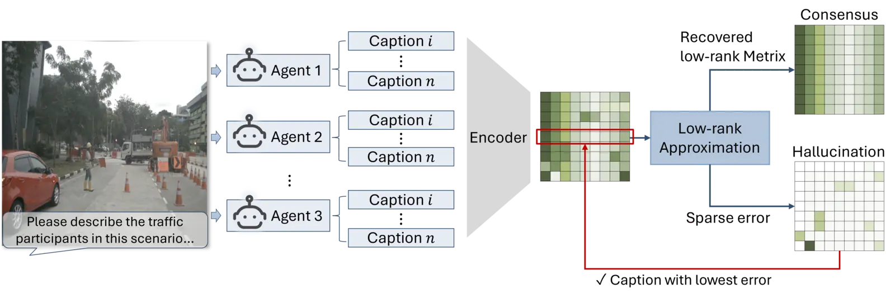
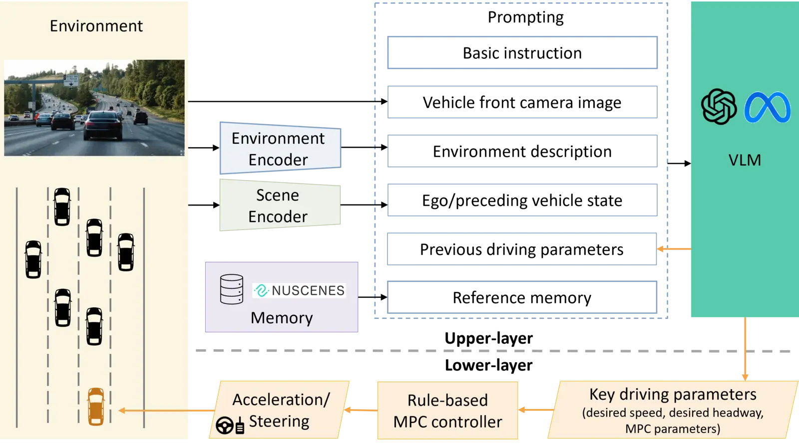

P1
A Low-Rank Method for Vision Language Model Hallucination Mitigation in Autonomous Driving
arXiv, 2025
Paper
This research develops methods to make transportation AI safer, more interpretable, and more dependable under real-world uncertainty. The work spans hallucination mitigation, multimodal reasoning, and systematic evaluation before deployment.
arXiv, 2025
Paper
Transportation Research Part C, 2025
Paper